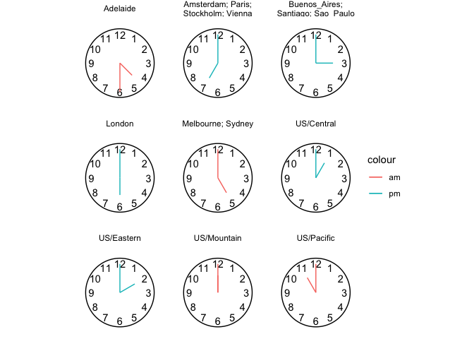
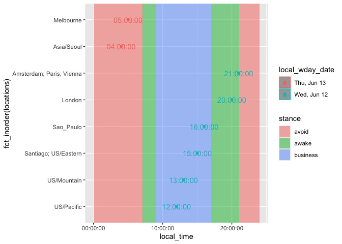

What if you could draw a beautiful ‘wall’ of clocks with local times from around the world? Well, gglobalclocks lets you do that!
I worked on the wall of clocks thinking it might help me schedule virtual meetings with participant in lots of different time zones. Does a beautiful wall of clocks help schedule global meetings? As it turns out, in my experience, not really!
But gglobalclocks also has utilities for building dataframes of locations and local times which I have found helpful for multi-timezone scheduling.
library(tidyverse)
gglobalclocks:::date_time_tz_to_tzs() |>
gglobalclocks:::local_tzs_df_collapse() |>
gglobalclocks:::gglobalclocks() +
aes(local_time = local_time) +
gglobalclocks:::stamp_clockface() +
gglobalclocks:::geom_clock_hands() +
facet_wrap(~str_wrap(locations, 20))
tz_targets <- c("US/Mountain","US/Eastern","US/Eastern", "Europe/Paris", "Europe/Amsterdam", "America/Sao_Paulo", "America/Santiago", "Australia/Melbourne")
gglobalclocks:::date_time_tz_to_tzs(
from_date_time = "2024-03-06 12:00:00",
from_tz = "US/Mountain",
to_tz = tz_targets)
#> # A tibble: 7 × 6
#> tz local_time_date_utc local_time local_date local_wday local_wday_date
#> <chr> <dttm> <time> <date> <ord> <chr>
#> 1 US/Mount… 2024-03-06 12:00:00 12:00 2024-03-06 Wed Wed, Mar 6
#> 2 US/Easte… 2024-03-06 14:00:00 14:00 2024-03-06 Wed Wed, Mar 6
#> 3 America/… 2024-03-06 16:00:00 16:00 2024-03-06 Wed Wed, Mar 6
#> 4 America/… 2024-03-06 16:00:00 16:00 2024-03-06 Wed Wed, Mar 6
#> 5 Europe/A… 2024-03-06 20:00:00 20:00 2024-03-06 Wed Wed, Mar 6
#> 6 Europe/P… 2024-03-06 20:00:00 20:00 2024-03-06 Wed Wed, Mar 6
#> 7 Australi… 2024-03-07 06:00:00 06:00 2024-03-07 Thu Thu, Mar 7
df <- gglobalclocks:::date_time_tz_to_tzs(
from_date_time = "2024-03-06 12:00:00",
from_tz = "US/Mountain",
to_tz = tz_targets) |>
gglobalclocks:::local_tzs_df_collapse()
df
#> # A tibble: 5 × 4
#> locations local_time local_wday_date location
#> <chr> <time> <chr> <fct>
#> 1 US/Mountain 12:00 Wed, Mar 6 US/Mountain
#> 2 US/Eastern 14:00 Wed, Mar 6 US/Eastern
#> 3 Santiago; Sao_Paulo 16:00 Wed, Mar 6 Santiago; Sao_Paulo
#> 4 Amsterdam; Paris 20:00 Wed, Mar 6 Amsterdam; Paris
#> 5 Melbourne 06:00 Thu, Mar 7 Melbourne
df |>
ggplot() +
gglobalclocks:::stamp_workday() +
aes(local_time, fct_inorder(locations)) +
geom_point() +
geom_text(aes(label = local_time)) +
aes(color = local_wday_date)
Part II. Functions discussion and definitions
time_to_local()
One helper function to do translation from one time zone to multiple time zones is time_to_local. From working on global clocks, it seems like you can’t keep date-times with different time zones in one vector (or variable), so you need to do a conversion one by one and save a character version of the complete time zone information.
time_to_local <- function(x, tz){
lubridate::with_tz(x, tz = tz) %>%
as.character()
}
date_time_tz_to_tzs()
We can use the converter above to translate from a ‘from’ location and time to a bunch of locations’ local times. We do this and then add a few more helpful columns like local_time, local_date etc.
date_time_tz_to_tzs <- function(from_date_time = "2024-03-27 12:00:00",
from_tz = "US/Mountain",
to_tz = c("Europe/Paris",
"Europe/Amsterdam",
"Australia/Adelaide",
"Australia/Melbourne",
"Europe/Stockholm",
"US/Eastern",
"Europe/London",
"US/Pacific",
"US/Mountain",
"US/Central",
"Australia/Sydney",
"Europe/Vienna",
"America/Sao_Paulo",
"America/Santiago",
"America/Buenos_Aires")){
meeting <- ymd_hms(from_date_time,
tz = from_tz)
OlsonNames() %>%
data.frame(tz = .) %>%
dplyr::filter(tz != "US/Pacific-New") %>%
dplyr::filter(tz %in% to_tz) %>%
dplyr::mutate(local_date_time_chr = purrr::map2(meeting, tz, time_to_local)) %>%
tidyr::unnest(local_date_time_chr) %>%
dplyr::mutate(local_time_date_utc =
lubridate::ymd_hms(local_date_time_chr, tz = "UTC")) %>%
dplyr::mutate(local_time = lubridate::ymd_hms(local_date_time_chr)) %>%
dplyr::mutate(local_time = hms::as_hms(local_time)) %>%
dplyr::mutate(local_date = as.Date(local_date_time_chr)) %>%
dplyr::mutate(local_wday = lubridate::wday(local_date, label = T)) %>%
dplyr::arrange(local_date, local_time) %>%
dplyr::select(-local_date_time_chr) %>%
dplyr::mutate(local_wday_date = paste0(local_wday, ", ", month(local_date, label = T), " ", day(local_date)))
}
date_time_tz_to_tzs() |>
head()
#> # A tibble: 6 × 6
#> tz local_time_date_utc local_time local_date local_wday local_wday_date
#> <chr> <dttm> <time> <date> <ord> <chr>
#> 1 US/Pacif… 2024-03-27 11:00:00 11:00 2024-03-27 Wed Wed, Mar 27
#> 2 US/Mount… 2024-03-27 12:00:00 12:00 2024-03-27 Wed Wed, Mar 27
#> 3 US/Centr… 2024-03-27 13:00:00 13:00 2024-03-27 Wed Wed, Mar 27
#> 4 US/Easte… 2024-03-27 14:00:00 14:00 2024-03-27 Wed Wed, Mar 27
#> 5 America/… 2024-03-27 15:00:00 15:00 2024-03-27 Wed Wed, Mar 27
#> 6 America/… 2024-03-27 15:00:00 15:00 2024-03-27 Wed Wed, Mar 27
local_tzs_df_collapse()
If it turns out that you have multiple tz with the same local meeting time, you can collapse these locations by local time.
local_tzs_df_collapse <- function(local_tzs_df, collapse = "; "){
local_tzs_df |>
group_by(local_date, local_time, local_wday_date) |>
summarise(locations = paste(tz, collapse = collapse)) |>
ungroup() |>
select(locations, everything()) |>
mutate(locations = str_remove_all(locations, "Europe/|America/|Australia/")) |>
arrange(local_date, local_time) |>
mutate(location = fct_inorder(locations)) |>
select(-local_date)
}This is the type of information you might send to an attendees list so they can know, at a glance, their likelihood of making attending work.
date_time_tz_to_tzs() |>
local_tzs_df_collapse() |>
head()
#> `summarise()` has grouped output by 'local_date', 'local_time'. You can
#> override using the `.groups` argument.
#> # A tibble: 6 × 4
#> locations local_time local_wday_date location
#> <chr> <time> <chr> <fct>
#> 1 US/Pacific 11:00 Wed, Mar 27 US/Pacific
#> 2 US/Mountain 12:00 Wed, Mar 27 US/Mountain
#> 3 US/Central 13:00 Wed, Mar 27 US/Central
#> 4 US/Eastern 14:00 Wed, Mar 27 US/Eastern
#> 5 Buenos_Aires; Santiago; Sao_Paulo 15:00 Wed, Mar 27 Buenos_Aires; Sa…
#> 6 London 18:00 Wed, Mar 27 LondonMore charming display…
You can of course display in a nicer way, passing to html table maker for example.
date_time_tz_to_tzs() |>
local_tzs_df_collapse() |>
knitr::kable()
#> `summarise()` has grouped output by 'local_date', 'local_time'. You can
#> override using the `.groups` argument.| locations | local_time | local_wday_date | location |
|---|---|---|---|
| US/Pacific | 11:00:00 | Wed, Mar 27 | US/Pacific |
| US/Mountain | 12:00:00 | Wed, Mar 27 | US/Mountain |
| US/Central | 13:00:00 | Wed, Mar 27 | US/Central |
| US/Eastern | 14:00:00 | Wed, Mar 27 | US/Eastern |
| Buenos_Aires; Santiago; Sao_Paulo | 15:00:00 | Wed, Mar 27 | Buenos_Aires; Santiago; Sao_Paulo |
| London | 18:00:00 | Wed, Mar 27 | London |
| Amsterdam; Paris; Stockholm; Vienna | 19:00:00 | Wed, Mar 27 | Amsterdam; Paris; Stockholm; Vienna |
| Adelaide | 04:30:00 | Thu, Mar 28 | Adelaide |
| Melbourne; Sydney | 05:00:00 | Thu, Mar 28 | Melbourne; Sydney |
Let’s build a wall of global clocks with base ggplot2
date_time_tz_to_tzs() |>
local_tzs_df_collapse() |>
mutate(minute_turn = local_time %>%
lubridate::minute() %% 60 / 60) %>%
mutate(hour_turn = local_time %>%
lubridate::hour() %% 12/12 + minute_turn/12) %>%
mutate(am_pm = ifelse(local_time %>% lubridate::hour() >= 12, "pm", "am")) %>%
ggplot() +
facet_wrap(~ str_wrap(locations, 15)) +
aes(x = hour_turn,
xend = hour_turn,
y = 0,
yend = .6,
color = am_pm) +
labs(color = NULL) +
geom_segment() +
geom_segment(aes(x = minute_turn,
xend = minute_turn ,
yend = 1) ) +
coord_polar() +
scale_x_continuous(limits = c(0,1)) +
geom_text(data = tibble(x = 1:12, y = 1),
aes(label = x, x = x/12, y = y, xend = NULL,
yend = NULL, color = NULL),
show.legend = F) +
theme_void() +
annotate(geom = "segment", x = 0, xend = 1, y = 1.2, yend = 1.2)
#> `summarise()` has grouped output by 'local_date', 'local_time'. You can
#> override using the `.groups` argument.Speed things up by putting some of this into functions
gglobalclocks()
gglobalclocks <- function(data = NULL){
ggplot2::ggplot(data) +
list(ggplot2::theme_void(),
ggplot2::coord_polar(),
ggplot2::scale_x_continuous(limits = c(0,1)),
ggplot2::scale_y_continuous(limits = c(0,1.3)))
}
stamp_clockface()
stamp_clockface <- function(){
list(ggplot2::geom_text(data = data.frame(x = 1:12, y = 1),
ggplot2::aes(label = x, x = x/12, y = y, xend = NULL,
yend = NULL, color = NULL, local_time = NULL),
show.legend = F),
ggplot2::annotate(geom = "segment", x = 0, xend = 1, y = 1.2, yend = 1.2)
)
}
gglobalclocks() + stamp_clockface()
statClockhourhand
# there's probably a lot of fun to be had refactoring this!
# seems quite verbose
compute_clock_hands <- function(data){
data |>
dplyr::mutate(minute_turn = local_time %>% lubridate::minute() %% 60 / 60) |>
dplyr::mutate(hour_turn = local_time %>% lubridate::hour() %% 12/12 + minute_turn/12) |>
dplyr::mutate(am_pm = ifelse(local_time %>% lubridate::hour() > 12, "pm", "am"))
}
compute_hour_hand <- function(data, scales){
data |>
compute_clock_hands() |>
dplyr::mutate(x = hour_turn,
xend = hour_turn,
y = 0,
yend = .6)
}
compute_minute_hand <- function(data, scales){
data |>
compute_clock_hands() |>
dplyr::mutate(x = minute_turn,
xend = minute_turn,
# color = am_pm,
y = 0,
yend = 1)
}
statClockminhand <- ggplot2::ggproto(`_class` = "statClockminhand",
`_inherit` = ggplot2::Stat,
# required_aes = c("local_time"),
compute_group = compute_minute_hand,
default_aes = ggplot2::aes(color =
ggplot2::after_stat(am_pm))
)
geom_minute_hand <- function(
mapping = NULL,
data = NULL,
position = "identity",
na.rm = FALSE,
show.legend = NA,
inherit.aes = TRUE, ...) {
ggplot2::layer(
stat = statClockminhand, # proto object from step 2
geom = ggplot2::GeomSegment, # inherit other behavior
data = data,
mapping = mapping,
position = position,
show.legend = show.legend,
inherit.aes = inherit.aes,
params = list(na.rm = na.rm, ...)
)
}
statClockhourhand <- ggplot2::ggproto(`_class` = "statClockhourhand",
`_inherit` = ggplot2::Stat,
# required_aes = c("local_time"),
compute_group = compute_hour_hand,
default_aes = ggplot2::aes(color =
ggplot2::after_stat(am_pm))
)
date_time_tz_to_tzs() |> compute_clock_hands()
#> # A tibble: 15 × 9
#> tz local_time_date_utc local_time local_date local_wday local_wday_date
#> <chr> <dttm> <time> <date> <ord> <chr>
#> 1 US/Paci… 2024-03-27 11:00:00 11:00 2024-03-27 Wed Wed, Mar 27
#> 2 US/Moun… 2024-03-27 12:00:00 12:00 2024-03-27 Wed Wed, Mar 27
#> 3 US/Cent… 2024-03-27 13:00:00 13:00 2024-03-27 Wed Wed, Mar 27
#> 4 US/East… 2024-03-27 14:00:00 14:00 2024-03-27 Wed Wed, Mar 27
#> 5 America… 2024-03-27 15:00:00 15:00 2024-03-27 Wed Wed, Mar 27
#> 6 America… 2024-03-27 15:00:00 15:00 2024-03-27 Wed Wed, Mar 27
#> 7 America… 2024-03-27 15:00:00 15:00 2024-03-27 Wed Wed, Mar 27
#> 8 Europe/… 2024-03-27 18:00:00 18:00 2024-03-27 Wed Wed, Mar 27
#> 9 Europe/… 2024-03-27 19:00:00 19:00 2024-03-27 Wed Wed, Mar 27
#> 10 Europe/… 2024-03-27 19:00:00 19:00 2024-03-27 Wed Wed, Mar 27
#> 11 Europe/… 2024-03-27 19:00:00 19:00 2024-03-27 Wed Wed, Mar 27
#> 12 Europe/… 2024-03-27 19:00:00 19:00 2024-03-27 Wed Wed, Mar 27
#> 13 Austral… 2024-03-28 04:30:00 04:30 2024-03-28 Thu Thu, Mar 28
#> 14 Austral… 2024-03-28 05:00:00 05:00 2024-03-28 Thu Thu, Mar 28
#> 15 Austral… 2024-03-28 05:00:00 05:00 2024-03-28 Thu Thu, Mar 28
#> # ℹ 3 more variables: minute_turn <dbl>, hour_turn <dbl>, am_pm <chr>
date_time_tz_to_tzs() |> compute_minute_hand()
#> # A tibble: 15 × 13
#> tz local_time_date_utc local_time local_date local_wday local_wday_date
#> <chr> <dttm> <time> <date> <ord> <chr>
#> 1 US/Paci… 2024-03-27 11:00:00 11:00 2024-03-27 Wed Wed, Mar 27
#> 2 US/Moun… 2024-03-27 12:00:00 12:00 2024-03-27 Wed Wed, Mar 27
#> 3 US/Cent… 2024-03-27 13:00:00 13:00 2024-03-27 Wed Wed, Mar 27
#> 4 US/East… 2024-03-27 14:00:00 14:00 2024-03-27 Wed Wed, Mar 27
#> 5 America… 2024-03-27 15:00:00 15:00 2024-03-27 Wed Wed, Mar 27
#> 6 America… 2024-03-27 15:00:00 15:00 2024-03-27 Wed Wed, Mar 27
#> 7 America… 2024-03-27 15:00:00 15:00 2024-03-27 Wed Wed, Mar 27
#> 8 Europe/… 2024-03-27 18:00:00 18:00 2024-03-27 Wed Wed, Mar 27
#> 9 Europe/… 2024-03-27 19:00:00 19:00 2024-03-27 Wed Wed, Mar 27
#> 10 Europe/… 2024-03-27 19:00:00 19:00 2024-03-27 Wed Wed, Mar 27
#> 11 Europe/… 2024-03-27 19:00:00 19:00 2024-03-27 Wed Wed, Mar 27
#> 12 Europe/… 2024-03-27 19:00:00 19:00 2024-03-27 Wed Wed, Mar 27
#> 13 Austral… 2024-03-28 04:30:00 04:30 2024-03-28 Thu Thu, Mar 28
#> 14 Austral… 2024-03-28 05:00:00 05:00 2024-03-28 Thu Thu, Mar 28
#> 15 Austral… 2024-03-28 05:00:00 05:00 2024-03-28 Thu Thu, Mar 28
#> # ℹ 7 more variables: minute_turn <dbl>, hour_turn <dbl>, am_pm <chr>, x <dbl>,
#> # xend <dbl>, y <dbl>, yend <dbl>
geom_clock_hands()
geom_hour_hand <- function(
mapping = NULL,
data = NULL,
position = "identity",
na.rm = FALSE,
show.legend = NA,
inherit.aes = TRUE, ...) {
ggplot2::layer(
stat = statClockhourhand, # proto object from step 2
geom = ggplot2::GeomSegment, # inherit other behavior
data = data,
mapping = mapping,
position = position,
show.legend = show.legend,
inherit.aes = inherit.aes,
params = list(na.rm = na.rm, ...)
)
}
geom_clock_hands <- function(...){
list(geom_hour_hand(...),
geom_minute_hand(...))
}Try it out
date_time_tz_to_tzs() |>
local_tzs_df_collapse() |>
gglobalclocks() +
aes(local_time = local_time) +
stamp_clockface() +
geom_minute_hand() +
geom_hour_hand() +
facet_wrap(~locations)
#> `summarise()` has grouped output by 'local_date', 'local_time'. You can
#> override using the `.groups` argument.
date_time_tz_to_tzs() |>
local_tzs_df_collapse() |>
gglobalclocks() +
aes(local_time = local_time) +
stamp_clockface() +
geom_clock_hands() +
facet_wrap(~locations)
#> `summarise()` has grouped output by 'local_date', 'local_time'. You can
#> override using the `.groups` argument.
readme2pkg::chunk_to_r("gglobalclocks")
readme2pkg::chunk_to_r("stamp_clockface")
readme2pkg::chunk_to_r("statClockhourhand")
readme2pkg::chunk_to_r("geom_clock_hands")If a wall of clocks is unhelpful in scheduling, can we viz in a different way? Towards LocationXLocaTime plot
stamp_workday()
We’ll use an ‘stamp’ (annotation) layer that helps us get oriented to the 12 hours in a work day.
create_day_schedule_df <- function(){
data.frame(time_start =
hms::as_hms(c("00:00:00","07:00:00", "09:00:00", "17:00:00","21:00:00")),
time_end =
hms::as_hms(c("07:00:00","09:00:00", "17:00:00", "21:00:00","24:00:00")),
stance = c("avoid","awake", "business","awake","avoid"))
}
stamp_workday <- function(show.legend = T){
ggplot2::geom_rect(data = create_day_schedule_df(),
ggplot2::aes(xmin = time_start,
xmax = time_end,
x = NULL,
fill = stance,
ymin = -Inf,
ymax = Inf,
y = NULL,
color = NULL),
alpha = .5, show.legend = show.legend)
}
readme2pkg::chunk_to_r(chunk_name = "stamp_workday")LocationXLocalTime
date_time_tz_to_tzs() |>
local_tzs_df_collapse() |>
ggplot() +
aes(local_time, fct_rev(fct_inorder(str_wrap(locations,25)))) +
labs(x = "Local meet time", y = NULL) +
stamp_workday() +
geom_point() +
geom_text(aes(label = local_time),
hjust = -.1, show.legend = F) +
geom_vline(xintercept = hms::as_hms("12:00:00"),
linetype = "dashed", color = "grey25",
alpha = .2) +
aes(color = local_wday_date) +
labs(color = "Local meet date") +
theme(legend.position = "top",
legend.justification = "left") +
theme(panel.grid.major.y = element_blank(),
panel.grid.minor.y = element_line(color = ""))
#> `summarise()` has grouped output by 'local_date', 'local_time'. You can
#> override using the `.groups` argument.Part II. Packaging and documentation 🚧
Phase 1. Minimal working package
Bit A. Created package archetecture, running devtools::create(".") in interactive session. ✅
devtools::create(".")Bit B. Added roxygen skeleton? 🚧
Use a roxygen skeleton for auto documentation and making sure proposed functions are exported. Generally, early on, I don’t do much (anything) in terms of filling in the skeleton for documentation, because things may change.
Bit C. Managed dependencies ? 🚧
Package dependencies managed, i.e. depend::function() in proposed functions and declared in the DESCRIPTION
usethis::use_package("dplyr")
usethis::use_package( "hms")
usethis::use_package( "lubridate")
usethis::use_package( "purrr")
usethis::use_package( "tidyr")Bit D. Moved functions R folder? ✅
Use new {readme2pkg} function to do this from readme…
readme2pkg::chunk_to_r("date_time_tz_to_tzs")
readme2pkg::chunk_to_r("local_tzs_df_collapse")
readme2pkg::chunk_to_r("time_to_local")Bit E. Run devtools::check() and addressed errors. 🚧
devtools::check(pkg = ".")Bit F. Build package 🚧 ✅
devtools::build()Bit G. Write traditional README that uses built package (also serves as a test of build. ✅
The goal of the {ggchalkboard} package is to make it easy to theme ggplots like chalkboards
Install package with:
Once functions are exported you can remove go to two colons, and when things are are really finalized, then go without colons (and rearrange your readme…)
Bit H. Chosen a license? ✅
usethis::use_mit_license()Bit I. Add lifecycle badge (experimental) ✅
usethis::use_lifecycle_badge("experimental")Phase 2: Listen & iterate 🚧
Try to get feedback from experts on API, implementation, default decisions. Is there already work that solves this problem?
Phase 3: Let things settle
Bit B. Written formal tests of functions and save to test that folders 🚧
That would look like this…
library(testthat)
test_that("calc times 2 works", {
expect_equal(times_two(4), 8)
expect_equal(times_two(5), 10)
})
readme2pkg::chunk_to_tests_testthat("test_calc_times_two_works")Phase 4. Promote to wider audience…
Bit A. Package website built? ✅
usethis::use_pkgdown()
pkgdown::build_site()Appendix: Reports, Environment
Edit Description file
readLines("DESCRIPTION")
#> [1] "Package: gglobalclocks"
#> [2] "Title: Create a Wall of Clocks with the Local Time for Locations Around the World"
#> [3] "Version: 0.0.0.9000"
#> [4] "Authors@R: "
#> [5] " person(given = \"Gina\","
#> [6] " family = \"Reynolds\","
#> [7] " role = c(\"aut\", \"cre\"),"
#> [8] " email = \"first.last@example.com\","
#> [9] " comment = c(ORCID = \"YOUR-ORCID-ID\"))"
#> [10] "Description: What the package does (one paragraph)."
#> [11] "License: MIT + file LICENSE"
#> [12] "Encoding: UTF-8"
#> [13] "LazyData: true"
#> [14] "Roxygen: list(markdown = TRUE)"
#> [15] "RoxygenNote: 7.1.1"
#> [16] "Imports: "
#> [17] " dplyr,"
#> [18] " hms,"
#> [19] " lubridate,"
#> [20] " purrr,"
#> [21] " tidyr"Environment
Here I just want to print the packages and the versions
all <- sessionInfo() |> print() |> capture.output()
all[11:20]
#> [1] ""
#> [2] "attached base packages:"
#> [3] "[1] stats graphics grDevices utils datasets methods base "
#> [4] ""
#> [5] "other attached packages:"
#> [6] " [1] lubridate_1.9.2 forcats_1.0.0 stringr_1.5.0 "
#> [7] " [4] dplyr_1.1.0 purrr_1.0.1 readr_2.1.4 "
#> [8] " [7] tidyr_1.3.0 tibble_3.2.1 ggplot2_3.4.4.9000 "
#> [9] "[10] tidyverse_2.0.0.9000"
#> [10] ""
devtools::check() report
devtools::check(pkg = ".")What would gglobalclocks syntax look like using above approach as jumping off point?